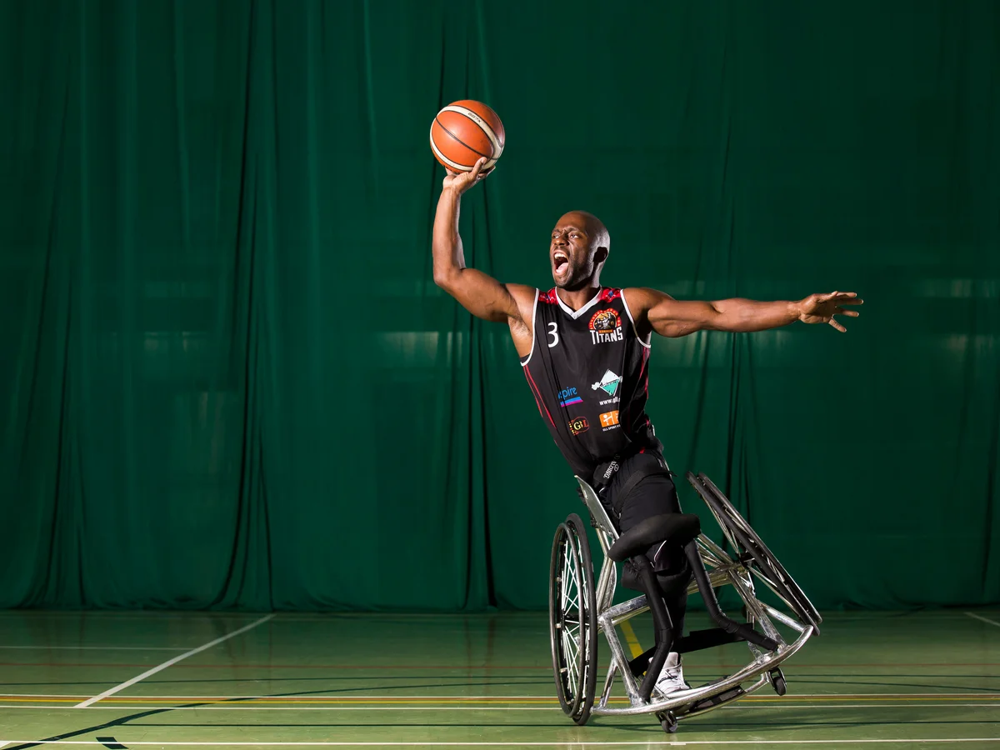

Adaptive Ballers are making waves in the community — a collective of athletes and advocates proving that wheelchair basketball is for everyone. Whether it’s through clinics, tournaments, or highlighting rising talent, Adaptive Ballers has become more than a team name; it’s a movement. They showcase the grit, skill, and passion that defines this sport, while opening doors for the next generation of players.
Breaking Barriers, Sparking Inclusion
Wheelchair basketball challenges stereotypes in ways that words alone cannot. Adaptive Ballers amplify this impact by creating platforms where athletes are not only competing, but also leading, mentoring, and inspiring future generations. Their presence reminds us that the story of wheelchair basketball isn’t just about sport—it’s about representation, empowerment, and possibility. Wheelchair basketball doesn’t just entertain; it inspires communities to rethink limits, embrace diversity, and recognize the champion spirit in every player who rolls onto the court.
More Than a Sport
For many athletes, including those in Adaptive Ballers, wheelchair basketball is far more than competition—it’s a lifeline, a source of empowerment, and a second family. The court is a sanctuary where players can leave behind the weight of stereotypes and focus on the joy of the game.
The bonds formed on the hardwood go beyond teammates. They become brothers, sisters, and mentors supporting one another through triumphs and setbacks alike. For new players, joining Adaptive Ballers often feels like stepping into a ready-made family, where encouragement flows as freely as competition.
For Adaptive Ballers, the game is not just about winning—it’s about belonging, and inspiring others to join the movement.
← Back to Blog